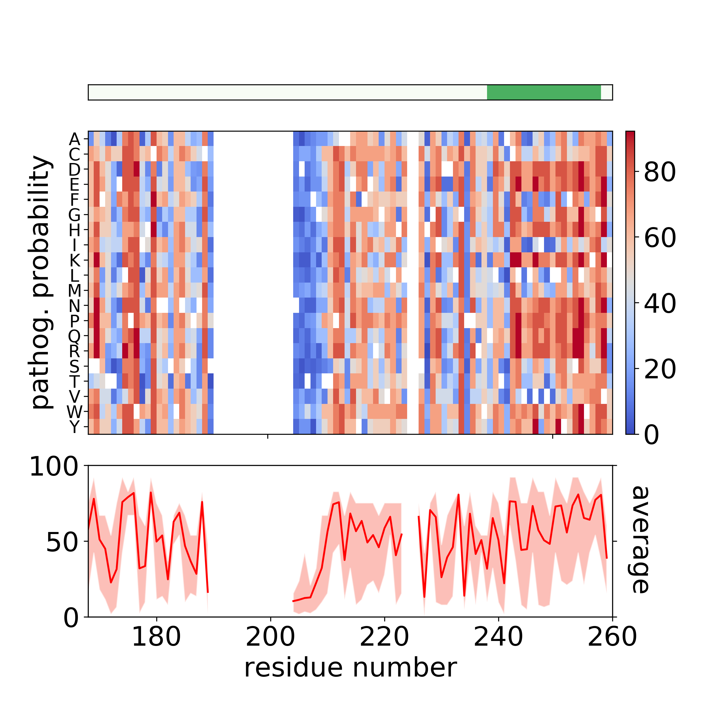
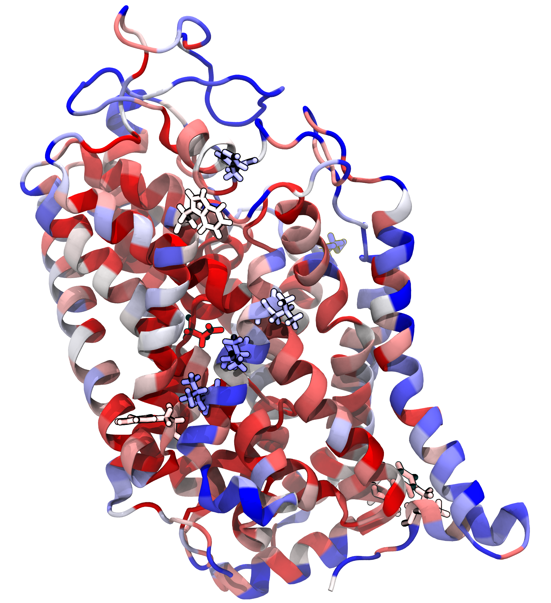
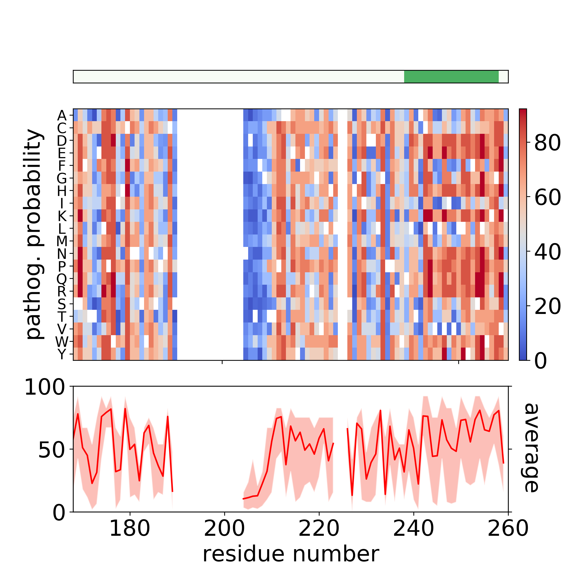
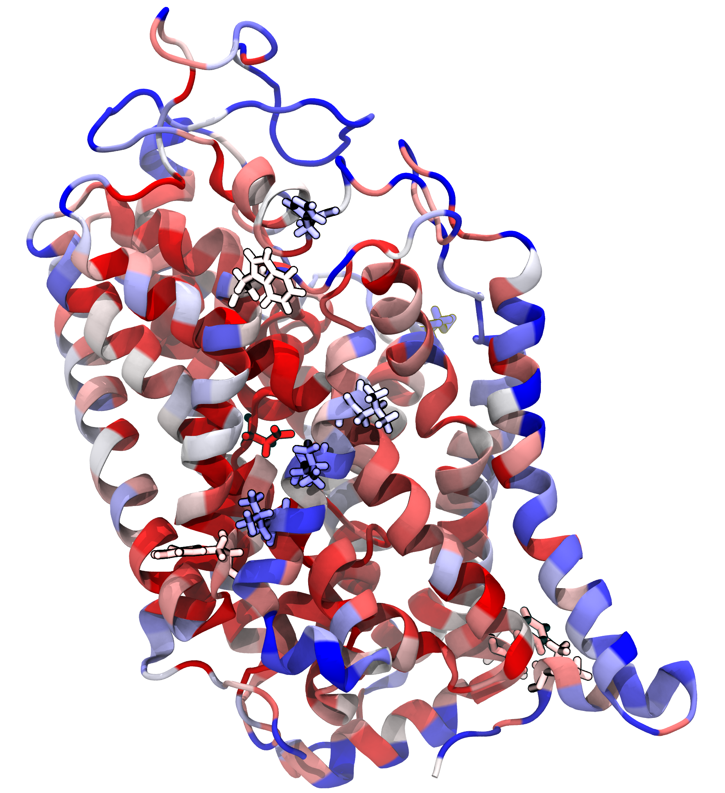

Examples
In silico saturation mutagenesis of DAT

Batch query of mixed variants
Mapping variants on custom PDB structure
In silico saturation mutagenesis of DAT
Batch query of mixed variants
Mapping variants on custom PDB structure
